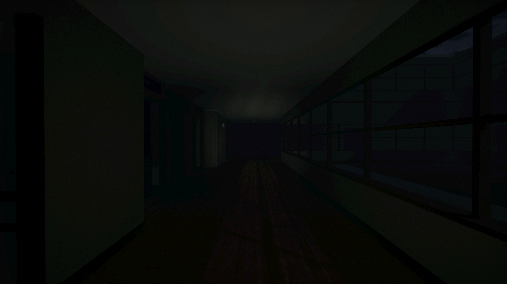

Selected games and software by Medianto Susilo

Notebook-style FPS · Browser
Shoot a BossOpen project ↗
Scroll to discover the work

First-person horror · Windows
SAKIKOOpen project ↗


Finance + habit app · Android
MauCuanOpen project ↗


Physics puzzle · Android + browser
JellinkOpen project ↗

Exploration + restaurant game · In development
Wildfeast: Isles of WonderOpen project ↗
More builds
Rundori Private receipts & staff workflows ↗Lantern Lot Secondhand-shop game · Early prototype ↗